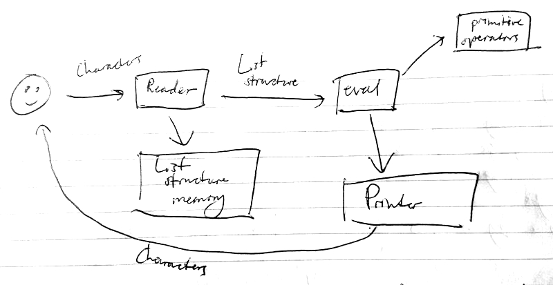
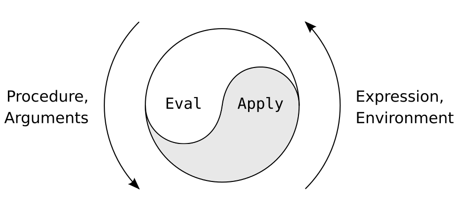

SICP 9b
Explicit-control Evaluator
Table of Contents
1 Recap (with big hat)
So far, we have seen the magic of building new languages:
- Escher picture language (by Peter Henderson),
- digital logic language,
- query language.
Even though these have been toy examples, they are kernels for very useful things. All of them are based on LISP.
A lot of people ask: what particular problems is LISP good for solving for? The answer is LISP is not good for any particular problems. Wht LISP is good for is constructing within it the right language to solve the problems you want to solve.
What is LISP based on? Whilst examining the meta-circular evaluator, we saw that LISP is based on LISP. We saw, through a concoction of magic with Y combinators and fixed points, that LISP is the fixed point equation for those things that are defined in terms of themselves. We will now peek behind the magician's curtain by implementing LISP in terms of the architecture of the register machine.
Organisation of Register Machine
stack <—> data paths <—> finite-state controller
If we implement LISP in terms of a register machine, then everything ought to become, at this point, completely concrete. All the magic should go away.
To implement LISP in a register machine, use the same technique as in the previous lecture: hand-translate the procedures for the meta-circular evaluator to the register machine.
This will be our final most explicit model of LISP, having already covered the substitution model, the environment model and the meta-circular evaluator.
The meta-circular evaluator left unanswered how recursive procedures take space that grows, whereas some procedures which look syntactically recursive, do not take up that space. We justified it with the substitution model, but did not explain how the machine managed to achieve it. This will become extremely explicit.
2 Eval/Apply

We will cover eval today. Primitive operators have very little to do with
LISP; reader and printer are rather complicated, but we will ignore them; list
structure memory will be covered in the next lecture.
Register usage in evaluator machine
exp |
expression to be evaluated |
env |
evaluation environment |
fun |
procedure to be applied |
argl |
list of evluated arguments |
continue |
place to go to next |
val |
result of evaluation |
unev |
temporary register for expressions |
Sample evaluator-machine operations
(assign val (fetch exp))
(branch
(conditional? (fetch exp))
ev-cond)
(assign exp (first-clause (fetch exp)))
(assign val
(lookup-variable-value (fetch exp)
(fetch env)))
There are a fixed and finite number of operations in the register machine.
Let's quickly recap what eval and apply are.
eval
(define (eval exp env)
(cond ((self-evaluating? exp) exp)
((quoted? exp)
(text-of-quotation exp))
<< ... more special forms .. >>
((application? exp)
(apply
(eval (operator exp) env)
(list-of-values (operands exp)
env)))
(else
(error "Unknown expression."))))
apply
(define (apply proc args)
(cond ((primitive-proc? proc)
(primitive-apply proc args))
((compound-proc? proc)
(eval-sequence
(proc-body proc)
(extend-environment
(parameters proc)
args
(proc-environment proc))))
(else
(error "Unknown proc type"))))

We will have to capture this cycle in the register machine, by creating
eval-dispatch and apply-dispatch.
Contract that eval-dispatch fulfills
- The
expregister holds an expression to be evaluated. - The
envregister holds the environment in which the expression is to be evaluated. - The
continueregister holds a place to go to next. - The result will be left in the
valregister. Contents of all other registers may be destroyed.
Contract that apply-dipatch fulfills
- The
arglregister contains a list of arguments. - The
funregister contains a procedure to be applied. - The top of the stack holds a place to go to next.
- The result will be left in the
valregister. The stack will be popped. Contents of all other registers may be destroyed.
In the video, the following expressions are covered step-by-step:
1x(+ x y)
in the environment e0 where x = 3, y = 4.
As text isn't able to convey the information anywhere near as well as the video, please watch the video to glean how the above expressions are evaluated. Below is the code necessary to evaluate the three expressions above.
eval-dispatch
(branch (self-evaluating? (fetch exp))
ev-self-eval)
(branch (variable? (fetch exp))
ev-variable)
< ... more special forms ... >
(branch (application? (fetch exp))
ev-application)
(goto unknown-expression-error)
ev-self-eval
(assign val (fetch exp))
(goto (fetch continue))
ev-variable
(assign
val
(lookup-variable-value (fetch exp)))
(goto (fetch continue))
ev-application
(assign unev (operands (fetch exp)))
(assign exp (operator (fetch exp)))
(save continue)
(save env)
(save unev)
(assign continue eval-args)
(goto eval-dispatch)
eval-args
(restore unev)
(restore env)
(assign fun (fetch val))
(save fun)
(assign argl '())
(goto eval-arg-loop)
eval-arg-loop
(save argl)
(assign
exp
(first-operand (fetch unev)))
(branch (last-operand? (fetch unev))
eval-last-arg)
(save env)
(save unev)
(assign continue accumulate-arg)
(goto eval-dispatch)
accumulate-arg
(restore unev)
(restore env)
(resetore argl)
(assign
argl
(cons (fetch val) (fetch argl)))
(assign
unev
(rest-operands (fetch unev)))
(goto eval-arg-loop)
eval-last-arg
(assign continue accumulate-last-arg)
(goto eval-dispatch)
accumulate-last-arg
(restore argl)
(assign
argl
(cons (fetch val) (fetch argl)))
(restore fun)
(goto apply-dispatch)
apply-dispatch
(branch (primitive-proc? (fetch fun))
primitive-apply)
(branch (compound-proc? (fetch fun))
compound-apply)
(goto unknown-proc-type-error)
primitive-apply
(assign
val
(apply-primitive-proc (fetch fun)
(fetch argl)))
(restore continue)
(goto (fetch continue))
The reason that you need recursion in the evaluator is because the evaluation process, itself, is recursive.
We haven't yet seen an eval/apply loop. The following example will rectify this.
(define (f a b) (+ a b)) (f x y)
In the environment e0 where x = 3, y = 4 and f = proc in envirnoment e0
with args: a b and body: (+ a b).
This example is essentially the same as the previous example, apart from that
we no longer deal with a primitive procedure, so a new environment will need to
be manufactured at some point: e1 where a = 3 and b = 4.
The evaluator will also have to be expanded.
compound-apply
(assign
exp
(procedure-body (fetch fun)))
(assign
env
(make-bindings (fetch fun)
(fetch argl)))
(restore continue)
(goto eval-dispatch)
Et voilà! The expression will be completely reduced with nothing left on the stack.
Let's see how the evaluator deals with two different kinds of procedures.
fact-iter
(define (fact-iter n)
(define (iter product counter)
(if (> counter)
product
(iter (* counter product)
(+ counter 1))))
(iter 1 1))
fact-rec
(define (fact-rec n)
(if (= n 0)
1
(* n (fact-rec (- n 1)))))
The evaluator is able to take procedures which look syntactically like recursive procedures, and execute some iteratively and some recursively. It achieves this by only saving what it needs later.
The above evaluator is only able to read one expression at a time. The more complete version, capable of dealing with multiple expressions in a sequence, is described below.
compound-apply
(assign
unev
(procedure-body (fetch fun)))
(assign
env(make-bindings (fetch fun)
(fetch argl)))
(goto eval-sequence)
eval-sequence
(assign exp (first-exp (fetch unev)))
(branch (last-exp? (fetch unev))
last-exp)
(save unev) (save env)
(assign continue eval-sequence-cont)
(goto eval-dispatch)
eval-sequence
(restore env) (restore unev)
(assign unev (rest-exps (fetch env)))
(goto-eval-sequence)
last-exp
(restore continue)
(goto eval-dispatch)